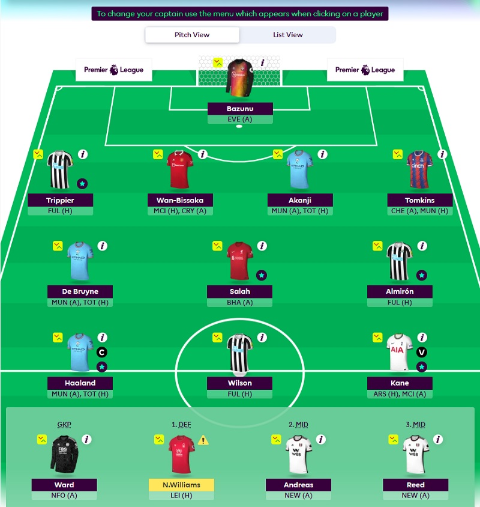
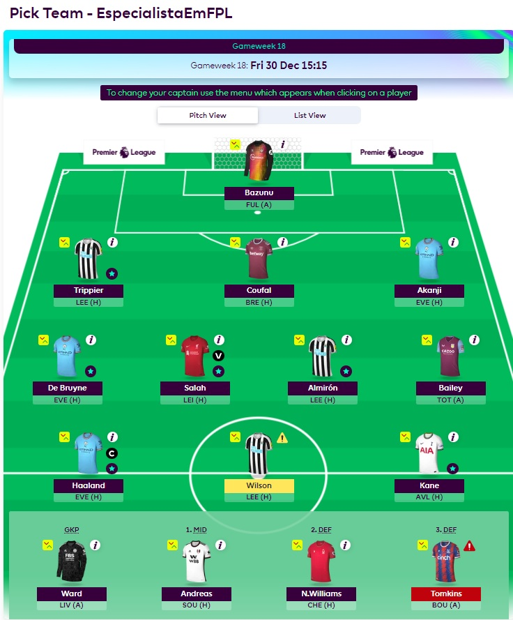

Escalação da 26° Rodada do Fantasy da Premier League
por FabioVascão
Atualizado em 03/Março/2023
26° Rodada da Premier League - Time do Canal
Escalação: Ward, Tarkowski, Estupiñán, Akanji, Odegaard, Saka, Rashford, Mahrez, Haaland(C), Watkins(VC) e Kane.
Banco: Alisson, Shaw, Trippier e Almirón.
Escalação da 22° Rodada do Fantasy da Premier League
por FabioVascão
Atualizado em 10/Fevereiro/2023
23° Rodada da Premier League - Time do Canal
Escalação: Pope, Trippier, Akanji, Shaw, Odegaard, Saka, Rashford, Mahrez(VC), Haaland(C), Nketiah e Kane.
Banco: Ward, Almirón, Estupiñán e Wan-Bissaka.
Escalação da 22° Rodada do Fantasy da Premier League
por FabioVascão
Atualizado em 03/Fevereiro/2023
22° Rodada da Premier League - Time do Canal
Escalação: Pope, Trippier, Wan Bissaka, Shaw, Odegaard, Saka, Rashford(C), Mahrez, Haaland, Nketiah e Kane.
Banco: Ward, Almirón, Estupiñán e Akanji.
Escalação da 21° Rodada do Fantasy da Premier League
por FabioVascão
Atualizado em 20/Janeiro/2023
21° Rodada da Premier League - Time do Canal
Escalação: Bazunu, Trippier, Bissaka, Akanji, Neco Williams, Salah, KDB, Almirón, Wilson, Kane e Halland(C).
Banco: Ward, Andreas, Reed e Tomkins.
Escalação da 20° Rodada do Fantasy da Premier League
por FabioVascão
Atualizado em 13/Janeiro/2023
20° Rodada da Premier League - Time do Canal
Escalação: Bazunu, Trippier, Bissaka, Akanji, Tomkins, Salah, KDB, Almirón, Wilson, Kane e Halland(C).
Banco: Ward, Neco Williams, Andreas e Reed.
Escalação da 18° Rodada do Fantasy da Premier League
por FabioVascão
Atualizado em 30/Dezembro/2022
18° Rodada da Premier League - Time do Canal
Escalação: Bazunu, Trippier, Coufal, Akanji, Salah(VC), KDB, Almirón, Bailey, Wilson, Kane e Halland(C).
Banco: Ward, Andreas, Neco Williams e Tomkins.
Escalação da 17° Rodada do Fantasy da Premier League
por FabioVascão
Atualizado em 21/Dezembro/2022
17° Rodada da Premier League - Time do Canal

Escalação: Bazunu, Trippier, Sanchez, Akanji, Salah(VC), KDB, Almirón, Andreas, Wilson, Kane e Halland(C).
Banco: Ward, Tomkins, Bailey e Neco Williams.